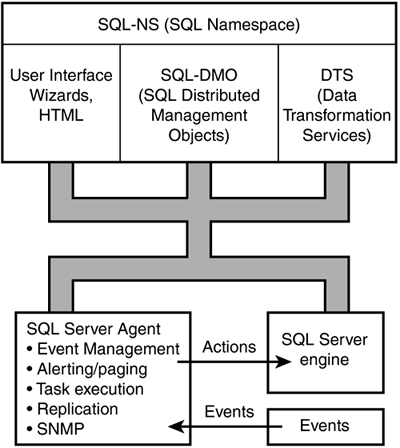

The SQL Distributed Management Framework is a framework of objects, services, and components used to manage Microsoft SQL Server 2000. It is made up of a few APIs that you can use to accomplish tasks in your applications.
You can see how these APIs are used in Figure 7.3.

Following is a brief description of each of the APIs. We will be using the last two directly in the rest of this chapter.
SQL-NS. SQL Namespace provides a way to actually call the Enterprise Managers dialog boxes and User Interface. SQL Namespace uses the other APIs listed.
SQL-DMO. SQL Distributed Management Objects give you access to the various objects within SQL Server, as well as some of the tasks that can be performed using the Enterprise Manager, so that you can perform them within your own application.
SQL-DTS. SQL Data Transformation Services allows you to create transformation packages and tasks, much like you would by using the DTS user interface.